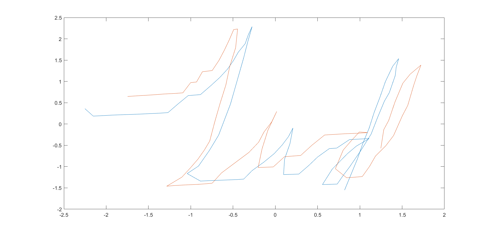
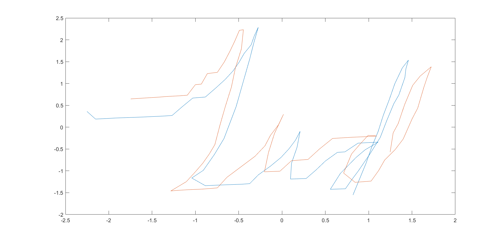
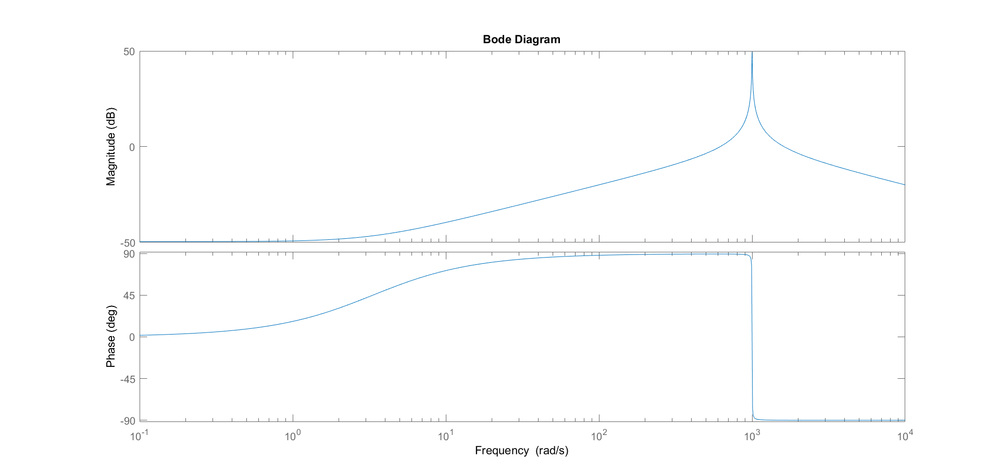
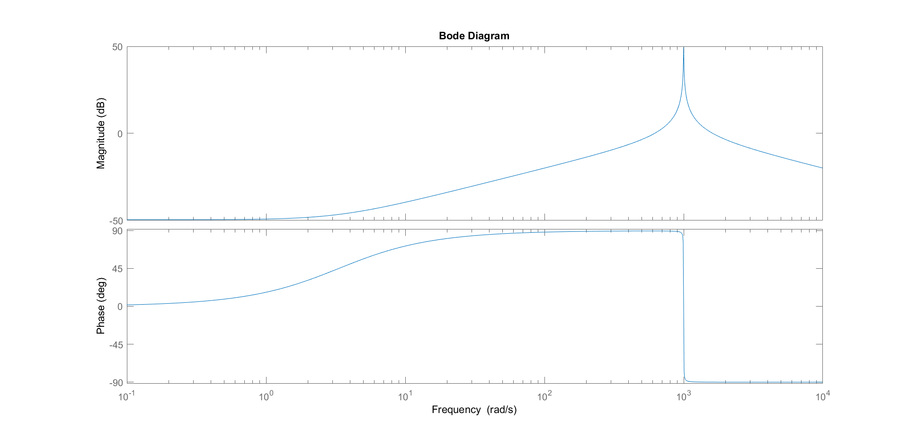

As part of the Medical Device Realization and Computational Instrumentation group, I work on developing a probe for diagnosing scarring hair loss. Currently, the diagnosis
involves first shaving the patient's hair so that a camera can acquire images of the scalp to identify areas of low follicle count and inflammation. My design, the Opticomb,
is a comb-shaped probe with optical fibers that extend between the patient's hair and onto the scalp. A photodiode array captures images of the scalp surface, an IMU and
overhead camera monitors the probe position, and software on a microcontroller and a computer handles data storage, image stitching, and scalp map assembly.


 

 
